BeautifulSoup详解
BeautifulSoup是一个灵活有方便的网页解系库，处理搞笑，支持多种解析器，利用他可以不编写正贼表达式即可方便实现网页信息的提取。
解析库：
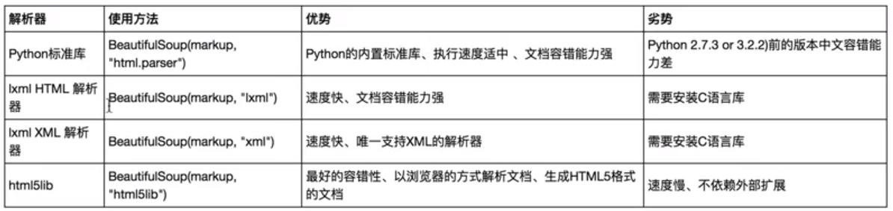
在此，我们主要用lxml解析器
标签选择器：
1 | # coding=utf-8 |
这里我们print了soup.title、head、p三个标签以及他们的类型，结果如下：
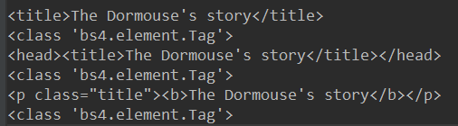
他们的类型都是bs.elment.tag，类型，类就是标签类型，并且对于soup.p，是把第一个p标签输出，也就是说有多个相同的标签，只输出第一个
获取名称：
1 | print(soup.title.name) |
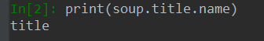
输出结果就是title
获取属性：
1 | print(soup.title.attrs['name']) |
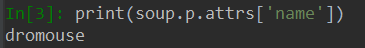
1 | print(soup.p['name']) |
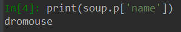
可以看到这两种方式都是相同的
获取内容：
1 | print(soup.p.string) |
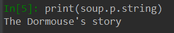
嵌套选择：
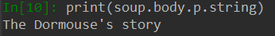
也就是说从body到p，是一个嵌套的关系，p也是说，通过 .head得到的tag还可以进一步 向下索取，通过.body.p得到p标签
子节点和子孙节点（children和contents）：
contents：
1 | # coding=utf-8 |
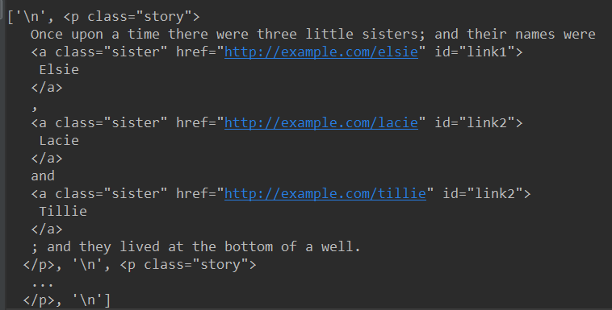
可以看到contents属性返回了一个列表，整个p中的内容。把所有的换行符 标签放进了列表
children:
当我们把contents换成children：
1 | print(soup.body.children) |
contents：
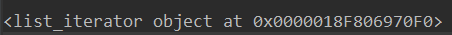
它返回了一个迭代器，需要用for循环遍历使用
后代descendants:
1 | print(soup.body.descendants) |
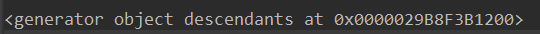
还是一个迭代器，并且descendants是获得所有子孙节点，也就是儿子的儿子也会获得
父节点parent：
返回父节点
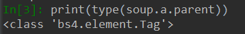
父节点parents:
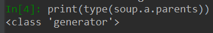
兄弟节点siblings：
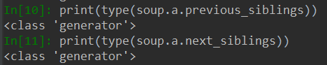
以上是标签选择器，是通过名字进行选择，但是在选择时候，往往会有很多名字相同的标签，所以我们不能完全用标签选择器进行选择，故引入标准选择器:
标准选择器：
find_all(name, attrs, recursive, text, \kwargs)**
可根据标签名、属性、内容查找文档， 把所有符合条件的结果，并以列表的形式返回
name：
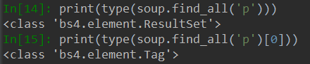
可以看到findall返回的列表中的每一个项哦都是tag类型
由此我们可以嵌套for循环：
1 | for p in soup.find_all('p'): |
attrs：
1 | print(soup.find_all(attrs={'id': 'list-1'})) |
attr需要传入一个字典
并且对于某一些属性，可以直接用参数传入：
1 | print(soup.find_all(id='list-1')) |
text：
根据文本的内容选择，而它的返回值仅仅是文本的列表而不是tag
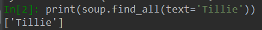
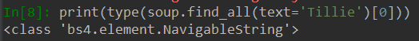
find(name, attrs, recursive, text, \kwargs)**
与find_all不同是 find返回单个元素，fan_all返回所有元素。 find查找一个不存在的元素返回None
find_parent()和find_parents():
find_parent()返回所有祖先节点，find_parent()返回直接父节点。
find_next_siblings() 和 find_next_sibling()
find_next_siblings() 返回后面所有兄弟节点 find_next_sibling()返回前面一个兄弟节点
find_all_next() 和find_next()
find_all_next()返回节点后所有符合条件的节点，find_next()返回第一个符合条件的节点
find_all_previous()和find_previous()
find_all_previous()返回节点钱所有符合条件的节点，find_previous返回第一个符合条件的节点
css选择器
通过css()直接传入css选择器即可完成选择
标签（什么都不用加）.属性（加点） #id（加井号）
1 | import requests |
输出结果1是一个包含所有p标签的列表 2是一个包含所有p标签下的a标签的列表，3是class 'bs4.element.Tag'，也就是说。css选择器生成的结果就是一个tag类型的列表。
同时对于soup.select(‘a.mysis‘表示class属性为mysis的所有标签。也即没有空格的表示有某一个属性的或者id的标签。 有空格代表是同等的
又因为select返回的是tag类型的列表，所以我们可以继续使用上面的方法获得属性即：、
1 | for a in soup.select('p a'): |
以下罗列出一些css选择器的方法：（以下内容转自https://www.cnblogs.com/kongzhagen/p/6472746.html）
1、通过标签选择
1 | # 选择所有title标签 |
2、通过类名查找
1 | # 选择a标签，其类属性为mysis的标签 |
3、通过id查找
1 | # 选择a标签，其id属性为link1的标签 |
4、通过【属性】查找，当然也适用于class
1 | # 选择a标签，其属性中存在myname的所有标签 |
5、获取文本及属性
1 | html_doc = """<html> |
在创建 BeautifulSoup 或 UnicodeDammit 对象前一定要先对文档调用 UnicodeDammit.detwingle() 确保文档的编码方式正确.如果尝试去解析一段包含Windows-1252编码的UTF-8文档,就会得到一堆乱码,比如: ☃☃☃“I like snowmen!”.
6、其他
1 | html_doc = """<html> |